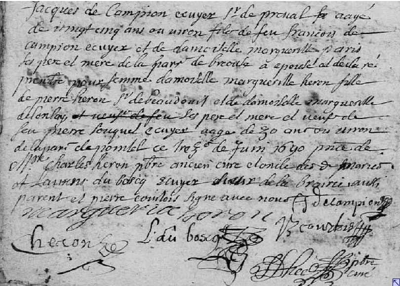
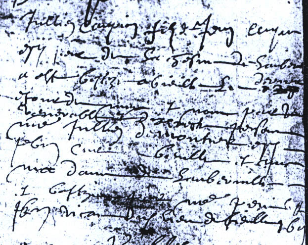

REGISTRES PAROISSAUX
et d'ETAT-CIVIL (2/2) REGISTRES PAROISSAUX
et d'ETAT-CIVIL (2/2)
REGISTRES PAROISSAUX
et d'ETAT-CIVIL (2/2) REGISTRES PAROISSAUX
et d'ETAT-CIVIL (2/2)
ATHIS-de-l'ORNE
Référence : Archives
Départementales de l'Orne
Provenance : Amaury du Rosel
2/3/1715 ° Jean François Joseph de Campion fils Jean, écuyer, seigneur de la ? et d'Anne de Breboeuf.
Référence : Archives
Départementales de l'Orne
Provenance : Amaury du Rosel
15/07/1697
° Catherine
Marguerite de Campion fille de Jacques,
écuyer, sieur de Préval et de Marguerite
Héron, dame de Préval ; parrain: Jean de Campion,
écuyer, sieur de la Bougonnière,
marraine: Catherine Marie .
22/07/1698 ° Jacques
Hyacinthe de Campion fils de Jacques,
écuyer et de Marguerite Héron.
Référence : Archives
Départementales du Calvados
Provenance : Amaury du Rosel
15/2/1632 ° et + Jeanne de Campion fille Louis, écuyer, seigneur de Cauvilly et dlle Anne Bernard.
Référence : Archives
Départementales du Calvados
Provenance : Amaury du Rosel
21/2/1651 x entre Jean de Campion, écuyer fils de René, écuyer, seigneur du Mesnil et de Stevenotte Legardier d'une part de Saint-Germain-de-Tallevende Et Marie Gautier fille de Charles, écuyer et de Catherine Anzeray
Référence : Archives
Départementales du Calvados
Provenance : Amaury du Rosel
13/11/1749 + Marie Madeleine de Campion veuve Charles Laurens, âgée de 70 ans.
Référence : Archives
Départementales du Calvados
le second jour de
febvrier mil six cents soixante
et sept noble homme françois
campion fils
pierre
aagé de vingt deux ans est decede
et a esté inhumé dans le cimmetiere de ce
lieu ledit jour par discrete personne me nicollas le tellier
curé
de cette parroisse
Provenance : Patrick Van Nieuwkerke
 |
Jacques de Campion
ecuyer S[ieu]r de preval aagé
|
Référence : Archives
Départementales du Calvados
Provenance : Amaury du Rosel
20/6/1650 x entre Thomas de Campion, écuyer, seigneur de Saint-Germain fils René, écuyer Stavenotte le Gardeur d'une part Et Madeleine Thoury fille de Jean, écuyer, seigneur et patron de Roulours et Jacqueline Douessy.
Référence : Archives
Départementales du Calvados
Provenance : Amaury du Rosel
1618 cité Guillaume de Campion, écuyer, seigneur de St-Martin.
Référence : Archives
Départementales de l'Orne
Provenance : Amaury du Rosel
22/4/1714 x entre Jean de Campion, écuyer, seigneur de la Pin ? fils + Jacques, écuyer et Marie du Plessis de Briouze d'une part Et Anne de Breboeuf fille + Gilles, écuyer et Catherine Turgot.
Référence : Archives
Départementales du Calvados
Provenance : Amaury du Rosel
1587 parrain Richard de Campion, écuyer.
1660 Catherine de Campion veuve du seigneur de la Bequetière.
1713 Charlotte de Campion femme Jacques Gautier, écuyer seigneur et patron de Courtville.
Référence : Archives
Départementales du Calvados
Provenance : Amaury du Rosel
25/2/1691 x entre Denis de Campion, écuyer, seigneur de la Chesnaye d'une part Et dlle Françoise le Carpentier.
Référence : Archives
Départementales du Calvados
Provenance : Amaury du Rosel
3/10/1742 x entre Jean Baptiste de Campion, écuyer, seigneur de la Fouquerie fils André, écuyer et Jeanne Pinel de Saint-Romphaire d'une part Et Marie Anne Dodeman fille Sébastien et Suzanne de Chantepie.
Référence : Archives
Départementales de la Manche
Provenance : Amaury du Rosel
1683 parrain Jacques Godard, écuyer, marraine Marie de Campion, son épouse.
Référence : Registres BMS de
Lamberville, 5 Mi 1591
Provenance : Archives
Départementales de la Manche et Amaury du Rosel
Le 11 août 1712
baptême de Françoise Philippe, fille de Nicolas et Marguerite Lamoureux. Parrain : Denis Campion (s), écuyer, sieur de la Chesnée, marraine : Demoiselle Françoise Lecarpentier (+) son épouse.
Le 12 juin 1719 inhumation de Françoise Lecarpentier, femme de Denis Campion
Du
douze juin mil sept cents dix neuf par nous
curé a eté inhumé le corps de francoise
Lecarpentier femme de denis
campion escuier
decedee du jour d'hier munie des S[ain]ts Sacremens
Signature Delamare
Le 29 janvier 1721 baptême de Marie Anne Campion
Du
vingt neuf janvier mil sept cents vingt et un a eté
baptisée une fille nee du jour d hier du legitime mariage
de denis campion
esc[uye]r et damoiselle Chatrine auvray
nommee marie anne par [barré] auvray accompagné
de damoiselle marie
anne campion presence de Jaques
nee et pierre bourdon
Signature Delamare
Le 28 octobre 1740, inhumation de Denis Campion
Le vingt huit octobre aud an [1740] le
corps de denis Campion
Escuier sr
de la chesnée agé Environ de quattre vingt
quattre ans
decedé Le jour d'hier apres avoir receu les Sts Sacr
a esté inhumé dans le cimetiere de cette
parroisse par Me Louis
Le barbey prestre En la presence de me françois Cauchard
ptre
et de Jacques Le Barbier custos
Le 6 janvier 1742 baptême de Jeanne Marie Le Noël fille d'Antoine, écuyer, sieur du Val et de Demoiselle Marie Anne de Campion. Marraine : noble dame Marie Anne Turgot (s) veuve du feu sieur Auvray, sieur de la Morignière, parrain : Jean Charles Claude du Vernay (s), de Cristot
Le 2 avril 1743, inhumation de Marie Anne Campion
Le deux avril aud an [1743] Le corps de
Demoiselle Marie Anne Campion
aâgée Environ de quatre vingt quatre ans
decedée d'hier après
avoir Reçu les S. S. Sacrements a esté
inhumé dans le Cimetiere
de cette parr. par moy curé soussigné en la
presence de Me
Loüis Le Barbey, prestre de cette parr et de jacques le barbier
custos
Le 27 janvier 1767, mariage entre Jacques Auvray fils d'Antoine et de Catherine Barey d'une part Et Marie Anne Françoise de Campion, veuve d'Antoine Noël, écuyer fille de feu Denis, écuyer et demoiselle Catherine Auvray.
Le 18 mars 1781, inhumation de Marie Anne Françoise de Campion veuve d'Antoine Noël, écuyer femme de Jacques Auvray.
Référence : Archives
Départementales de la Manche
- le 13 avril 1669, baptême de Françoise Campion
La fille de monsieur
de lamberville
de la chesnée de la parroisse
de Lamberville est née le 8
Jour dapvril et baptize en
Leglise de bieville le 13 jour
dud mois et nommee francoise
par francoize ...... femme
de monsieur du bocq et avecque
monsieur de la hogue (ou haye) oncle
de lenfan par le sieur cure de
bieville a faict le baptesme 1669
- le 31 mai 1670, baptême de Julien Campion
 |
Jullien Campion filz Jean ecuyer |
- le 11 mars 1687, inhumation de ? Campion (Jean comme ci-dessus ou Nicolas comme dans 5E13574 notariat de Torigni)
monsieur de la chesnee Campion fut enterre dans
Leglise de lamberville par le sieur cure de vidouville
le mardy unze ie dud mois ...
- le 10 février 1720, mariage de Denis Campion et Catherine Auvray
Référence : Archives
Départementales de la Manche,
http://recherche.archives.manche.fr
- le 13 juin 1620, mariage entre Jean de Campion et Jeanne Brouault (http://recherche.archives.manche.fr/?id=viewer&doc=accounts%2Fmnesys_ad50%2Fdatas%2Fir%2Fetat_civil%2FFRAD050_etat_civil.xml&page_ref=137686&lot_num=1&img_num=55)
Jan de Campion Escuier
s[ieu]r de Percy
de la parro[iss]e de la Meurdracquiere & dam[oise]lle
janne brouault fille de gilles brouault esc[uyer]
S[ieu]r de la Motte espouserent le traizieme
Jo[ur] de juin l an mil vi c vingt p[rese]nce Jacques
& pierre
de campion escuier La damo[is]elle
mere de lad[ite] fille & la dam[oise]lle vefve du S[ieu]r
du tanu(?) & plusieurs au[tr]es p[er]sonnes
Référence : Registres BMS de
Villiers-le-Pré
Provenance : Amaury du Rosel
Le 7 novembre 1651, mariage entre Jean Guischard, écuyer, seigneur et patron de Villiers d'une part et Geneviève de Campion fille de Jean, écuyer, seigneur d'Aubigny demeurant à Sainte-Suzanne, évêché de Bayeux (mariage célébré à Sainte-Suzanne).
Le 11 septembre 1652, inhumation de Geneviève de Campion femme de Jean Guischard, écuyer, seigneur et patron de Villiers.
Le 12 septembre 1652, inhumation de Nicolas Guischard, écuyer fils de Jean, écuyer, seigneur et patron de Villiers et de feue Geneviève de Campion.
Référence : Archives
Départementales de la Manche
Provenance : Amaury du Rosel
- le 20 juin 1724, mariage de Jean Baptiste de Campion et Marguerite le Maignen
- le 30 novembre 1724, mariage de Joseph Hervé de Campion et Anne le Maignen
Référence : Archives Départementales de la Manche
- le 26 septembre 1697, mariage de Jean de Campion et Marie Lebourgeois
Référence : Archives Départementales de la Manche
- le 16 avril 1697, inhumation de Jacques de Campion (acte rogné)
- le 3 novembre 1706, inhumation de Marie de Campion
Référence : Archives Départementales de la Manche
-
le 16 septembre 1692, mariage de François Osmont et Renée
Anne de Campion
-
le 13 décembre 1731, mariage de Charles François de Campion et Marie Jacqueline Vaultier
Référence : Archives Départementales de la Manche, http://recherche.archives.manche.fr
- le 3 mars 1609, baptême d'Henry de Campion (http://recherche.archives.manche.fr/?id=viewer&doc=accounts%2Fmnesys_ad50%2Fdatas%2Fir%2Fetat_civil%2FFRAD050_etat_civil.xml&page_ref=334832&lot_num=1&img_num=45)
1609
Henry fils de pierre de Campion
esc[uyer] S[ieu]r de Percy(?) et de dam[oise]lle (en blanc) des doictis
son ep[ous]e(?)
baptize p[ar] moy led[it](?) marchier en l eglise S[ain]t nicollas le
iiie[me] jo[ur]
de mars no[mm]é p[ar] henry des illes esc[uyer] S[ieu]r des
landes p[rése]nce
de
M[aîtr]e Jean costentin(?) p[rêt]re vicaire d
ancteville M[aîtr]e nicoll[as] dequene(?)
p[rêt]re
Jacques de campion
esc[uyer] Marie de
campion sa seur et ?
Référence : Archives
Départementales de la Manche,
http://recherche.archives.manche.fr, via Amaury du Rosel
- le 23 octobre 1617, inhumation de damoiselle Isabeau de Campion
- le 6 mai 1670, mariage d'Henry Le Cocq et Charlotte Le Berruyer (http://recherche.archives.manche.fr/?id=viewer&doc=accounts%2Fmnesys_ad50%2Fdatas%2Fir%2Fetat_civil%2FFRAD050_etat_civil.xml&page_ref=151750&lot_num=1&img_num=41)
Le mardy sixiesme jour de
may L an mil
six cent soixante et dix henry Le Cocq esc[uyer] sieur
de Taute co[n]seiller du Roy Lieutenant general
civil et criminel au baillage de S[ain]t Sauveur Lendel[in]
es siege de Ceren[ces] a espouze noble dame Charlotte
Le berruyer v[euv]e de Jacques
de Campion esc[uyer] sieur de La
grenterie de la parr[oisse] de La meurdraquiere
p[rese]nts pierre de pierre esc[uyer] sieur de la Riviere frere
en loy dud[it] sieur le cocq m[aîtr]e Louys moulin sieur de
la Chesnaye m[aîtr]e Anthoine grandin ad[voc]at et francois
Allexandre de pierre esc[uyer] qui ont signe avecque lesd[its]
mariés led[it] jour et an
Signatures de Henry Le cocq, Charlotte Leberruyer, Grandin, de Pierre,
A. de Pierre, L. Moulin
- le 29 mars 1686, inhumation d'un fils de Jacques de Campion (http://recherche.archives.manche.fr/?id=viewer&doc=accounts%2Fmnesys_ad50%2Fdatas%2Fir%2Fetat_civil%2FFRAD050_etat_civil.xml&page_ref=151658&lot_num=1&img_num=214)
Référence : Archives Départementales de la Manche, via Amaury du Rosel
-
le 19 juillet 1692, inhumation de Jeanne de Campion,
femme de Jean de Boisyvon (http://recherche.archives.manche.fr/?id=viewer&doc=accounts%2Fmnesys_ad50%2Fdatas%2Fir%2Fetat_civil%2FFRAD050_etat_civil.xml&page_ref=881027&lot_num=1&img_num=12)
Le samedy dix neuf[iem]e dud[it] mois [juillet] et an [1692] damoiselle
Jeanne de Campion f[emm]e de Jean de Boisyvon es[cuye]r s[ieu]r de
Longbois aagée de soixante et dix ans ou viron a esté
inhumée dans la chapelle du coeur de cette paroisse aux
p[rése]nces de vigor le feuvre les Sablons et de Louys pestel
la Vergée qui ont signé
Référence : Archives Départementales de Seine-Maritime
-
le 21 novembre 1668, mariage de Antoine de Campion
(http://recherche.archivesdepartementales76.net/?id=viewer&doc=accounts%2Fmnesys_ad76%2Fdatas%2Fir%2Fserie_E_seigneuries_familles_notaires_etat_civil%2FFRAD076_IR_E_etat_civil.xml&page_ref=1490033&lot_num=35&img_num=1&index_in_visu=)
Le 21 novembre 1668 a esté marié
Antoine de Campion Ecuyer s[ieur] de belle
fontaine agé de 26 ans de la parr[oisse] de S[ain]t
Laurent fils de francois de Campion escuyer
s[ieu]r du Montpoignant et de dame Jourdaine
Auber avec dam[ois]elle Elisabeth heribel
veuve de feu Me Jean Morel, le dit
mariage celebré apres la publica[ti]on d'un
baon et dispense des deux autres de mr l'official
en date du jo[ur] d hier en p[rése]nce des tesmoins
soussignés.
Signatures d'Anthoinne de Campion, Elisabeth Heribel, Jean Collas, Anne Houel, Fortin et Marguerite Clergeon(??)
-
le 2 avril 1673, baptême d'Alexandre de Campion
(http://recherche.archivesdepartementales76.net/?id=viewer&doc=accounts%2Fmnesys_ad76%2Fdatas%2Fir%2Fserie_E_seigneuries_familles_notaires_etat_civil%2FFRAD076_IR_E_etat_civil.xml&page_ref=1490033&lot_num=252&img_num=1&index_in_visu=)
Référence : Archives Départementales de la Manche (via Amaury du Rosel)
-
le 1er juin 1694, inhumation Jeanne de Campion
(http://recherche.archives.manche.fr/?id=viewer&doc=accounts%2Fmnesys_ad50%2Fdatas%2Fir%2Fetat_civil%2FFRAD050_etat_civil.xml&page_ref=497975&lot_num=1&img_num=40)
Référence : Archives Départementales de la Manche (via Amaury du Rosel)
-
le 11 octobre 1672, inhumation de Thomas de Campion
(http://recherche.archives.manche.fr/?id=viewer&doc=accounts%2Fmnesys_ad50%2Fdatas%2Fir%2Fetat_civil%2FFRAD050_etat_civil%2Exml&page_ref=793799&lot_num=1&img_num=133)
-
le 18 novembre 1676, inhumation de Jacques de Campion
(http://recherche.archives.manche.fr/?id=viewer&doc=accounts%2Fmnesys_ad50%2Fdatas%2Fir%2Fetat_civil%2FFRAD050_etat_civil%2Exml&page_ref=793799&lot_num=1&img_num=348)
-
le 4 février 1683, mariage de Jacqueline de Campion et Nicolas Bouchard
(http://recherche.archives.manche.fr/?id=viewer&doc=accounts%2Fmnesys_ad50%2Fdatas%2Fir%2Fetat_civil%2FFRAD050_etat_civil%2Exml&page_ref=793799&lot_num=1&img_num=340)
Référence : Archives Départementales de l'Eure-et-Loir
- le 28 février 1668 (p.4/88), inhumation d'Alexandre de Campion
du ving huitiesme
febvrier an p[rése]nt [1668]
Allexandre de
Campion seig[neu]r du roncenay
major de la ville de Roüen aagé de
cinquante neuf ans est décédé apres
avoir receu les s[aint]s sacremens
Signé Touzé
- le 30 juillet 1670 (p.35/88), inhumation de Nicolas de Campion
Du trentiesme Juillet mil
six
Cents soixante & dix a une heure
du matin Messire Nicollas
de Cam
Campion
pbre curé de l'Eglise de
s[ain]t pierre du vert & Prieur de s[ain]te
Marguerite du buisson Garembourt est
décédé
en la cinquante quatriesme année de son
aage après avoir donné des marques
d'une singulière piété et d'une entiere
resignation aux volontés de dieu a esté
inhumé le trente & uniesme & dernier jour
de juillet dans la ditte Eglise de Vert
apres avoir gouverné et conduit et
instruit son troupeu l'espase de trente
ans
Signé Lefrançois et Patricot
Référence : Archives Départementales de l'Eure-et-Loir
- le 18 mars 1670 (p.368 Inventaire sommaire série E t4 - AD Eure-et-Loir), mariage d'Edme de Campion
- le 12 juin 1685 (p.3/337), inhumation de Gabrielle de Pilliers
Référence : Archives Départementales de l'Eure
- le 19 février 1688 (p.562/698), mariage d'Edme de Campion
Référence : Archives Départementales de l'Eure
- le 25 juin 1633 (p.60/364), mariage d'Anne de CampionRéférence : Archives Départementales de la Manche, http://recherche.archives.manche.fr
- le 17 janvier 1722, mariage de Pierre Lemière et Marie de Campion (http://www.archives-manche.fr/ark:/57115/a011541774886PFbmZU/a22db82cf0)
Ce jourdhuy dix sept jour de janvier 1722 apres les
publications des bans faits par trois dimanches consecutifs
aux prosnes de nos grandes messes parroissialles sans
opposition entre pierre Le miere fils robert et de marie
pasturel ses pere et mere d'une part de cette parroisse
et de Damoiselle marie campion fille de nicollas escuyer
S[ieu]r de la chesnée et de damoiselle francoisse vautier ses
pere et mere dautre part, nous avons interrogé les
futurs maries scavoir led[it] pierre Le miere et Lad
Dam[oise]lle campion, les fiançailles faites et autres ceremonies
de Leglise deüment observées et receu leur mutuel
consentement les avons conjoint en mariage par parolles
de present et du consentement de leurs parents ce que lesd[its]
contractants ont signés en notre presence et en la p[rése]nce
de leurs amis scavoir germain Lemiere, pierre lescot
gilles Lemiere, Jacques pasturel et autres
Signatures P Lemiere, G Lemiere, Pierre Lescot, De la Broise, marques de Magdeleine Lemiere et Marie Campion
- le 10 juin 1723, baptême de Marie Madeleine Lemière (http://www.archives-manche.fr/ark:/57115/a011541774886PFbmZU/7ae594e1a3)
Le Dix jour de juin de la presente année 1723 une fille sortie de
legitime mariage de pierre Lemière et de Dam[oise]lle marie Campion
a ete baptisée par nous p[rêt]re curé de ce lieu soussigné
et nommée marie magdeleine par marie magdeleine Le
mière assistée de pierre Lescot son marry ce qu'ils ont signez
en notre presence
Signatures Dillays, Pierre Lescot, marque de Marie Madeleine Lemière
- le 7 décembre 1764, inhumation de Marie de Campion (http://www.archives-manche.fr/ark:/57115/a011541775016MRJjOF/194bb213b1)
Le sept decembre 1764 a ete par nous prestre vicaire de cette paroisse
inhumé le corps de noble femme marie Campion veuve de pierre le miere agé de quatre vingt
ans ou viron muni des Sacrements présence de guillaume Littée custos et plusieurs autres
Référence : Archives Départementales de la Manche, http://recherche.archives.manche.fr
- le 15 septembre 1678, mariage de François Bazin et Guillemette de Campion (http://www.archives-manche.fr/ark:/57115/a011288085770GSJVGk/49c8a78998)
dernière modification : 13 octobre 2019

retour à la famille Campion